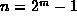
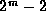
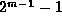
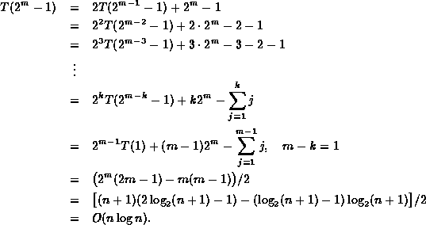

Data Structures and Algorithms
with Object-Oriented Design Patterns in C++
Data Structures and Algorithms
with Object-Oriented Design Patterns in C++
In the best case,
the partitioning step divides the remaining elements
into two sequences with exactly the same number of elements.
For example,
suppose that  for some integer m>0.
After removing the pivot  elements remain.
If these are divided evenly, each sequence will have  elements.
In this case Equation  gives
gives

 Copyright © 1997 by Bruno R. Preiss, P.Eng. All rights reserved.
Copyright © 1997 by Bruno R. Preiss, P.Eng. All rights reserved.